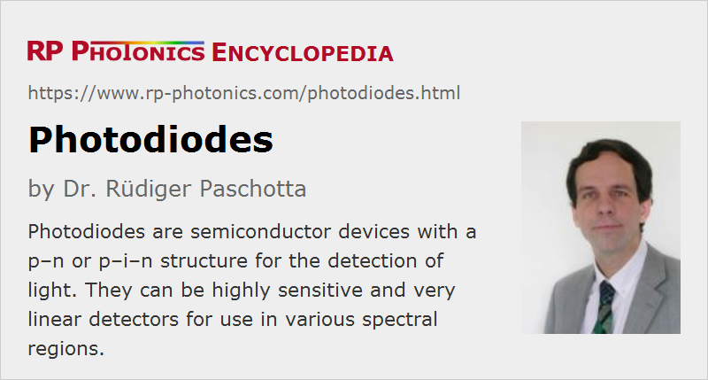

Photodiodes
Definition: semiconductor devices with a p–n or p–i–n structure for the detection of light
More general term: photodetectors
More specific terms: avalanche photodiodes, Geiger mode photodiodes, lateral effect photodiodes, quadrant photodiodes, p–i–n photodiodes, silicon photodiodes, germanium photodiodes, InGaAs photodiodes
German: Photodioden
Categories: photonic devices, light detection and characterization, optoelectronics, optical metrology
How to cite the article; suggest additional literature
Author: Dr. Rüdiger Paschotta
Photodiodes are frequently used photodetectors, which have largely replaced the formerly used phototubes. They are semiconductor devices which contain a p–n junction, and often an intrinsic (undoped) layer between n and p layers. Devices with an intrinsic layer are called p–i–n or PIN photodiodes. Light absorbed in the depletion region or the intrinsic region generates electron–hole pairs, most of which contribute to a photocurrent. The photocurrent can be quite precisely proportional to the absorbed (or incident) light intensity over a wide range of optical powers.
Figure 1 schematically shows the typical design of the photodiode on p–i–n type. Here, one has an intrinsic region between an n-doped and a p-doped region, where most of the electric carriers are generated. Through the electrical contacts (anode and cathode), the generated photocurrent can be obtained. The anode may have a ring shape, so that the light can be injected through the hole. A large active area can be obtained with a correspondingly large ring, but that tends to increase the capacitance, thus reducing the detection bandwidth, and increases the dark current; also, the efficiency may drop if carriers are generated too far from the electrodes.
For a high responsivity, one should have a material with a strong absorption for the optical wavelength of interest. When using a thicker layer for obtaining efficient absorption, one may lose a lot of the generated carriers.
Some photodiodes are available in the form of photodiode arrays, mostly of one-dimensional kind.
For substantially increased responsivity, one may either use avalanche photodiodes (see below) or phototransistors.
Operation Modes of Photodiodes
Photodiodes can be operated in two very different modes:
- Photovoltaic mode: like a solar cell, the illuminated photodiode generates a voltage which can be measured. However, the dependence of this voltage on the light power is nonlinear, and the dynamic range is fairly small. Also, the maximum speed is not achieved.

- Photoconductive mode: here, a reverse voltage is applied to the diode (i.e., a voltage in the direction where the diode is not conducting without incident light) and measures the resulting photocurrent. The simplest solution for that reversed-biased mode is based on a voltage source and a load resistor, as shown in Figure 2. The dependence of the photocurrent on the light power can be very linear over six or more orders of magnitude of the light power, e.g. in a range from a few nanowatts to tens of milliwatts for a silicon p–i–n photodiode with an active area of a few mm2. The magnitude of the reverse voltage has nearly no influence on the photocurrent and only a weak influence on the (typically small) dark current (obtained without light), but a higher voltage tends to make the response faster and also increases the heating of the device.
Even when used in photoconductive mode, photodiodes are usually not understood to be photoconductive detectors.
In the simple circuit according to Figure 2, the magnitude of the bias voltage drops with increasing photocurrent due to the voltage drop at the load resistor. While that has little influence on the linearity, it leads to a charging or discharging of the photodiode's capacitance whenever the incident light intensity changes, so that the detection bandwidth often becomes RC-limited. That introduces a trade-off between detection bandwidth and responsivity: a high bandwidth requires a small load resistor, which leads to a low responsivity and also a higher noise-equivalent power, which is often limited by thermal noise (Johnson noise) of the load resistor.
In order to avoid that trade-off, one often uses a current amplifier (also called transimpedance amplifier). Such an amplifier, which is typically realized with an operational amplifier (op-amp), keeps the voltage at the diode nearly constant (e.g. near zero, or at some possibly adjustable reverse bias), so that the photodiode's capacitance loses much of its relevance. The residual voltage variations at the photodiode are inversely proportional to the gain of the used operational amplifier. Still, it is good to minimize the input capacitance and requiring maximum bandwidth; for example, it is better to directly connect a photodiode to the current amplifier, instead of using a long cable connection.
Current amplifiers, which are also available as OEM devices, can also have very good noise properties. The relevant figure is the noise-equivalent input current, which can be well below 1 pA/Hz1/2.
Commercially available laboratory current amplifiers help to make power measurements very flexible by providing many different sensitivity settings, and thus a huge dynamic range with low-noise performance, and also possibly a built-in display, adjustable bias voltage and signal offset, adjustable filters, etc.
Semiconductor Materials
Typical photodiode materials are:
- silicon (Si): low dark current, high speed, good sensitivity between roughly 400 and 1000 nm (best around 800–900 nm)
- germanium (Ge): high dark current, slow speed due to large parasitic capacity, good sensitivity between roughly 900 and 1600 nm (best around 1400–1500 nm)
- indium gallium arsenide phosphide (InGaAsP): expensive, low dark current, high speed, good sensitivity roughly between 1000 and 1350 nm (best around 1100–1300 nm)
- indium gallium arsenide (InGaAs): expensive, low dark current, high speed, good sensitivity roughly between 900 and 1700 nm (best around 1300–1600 nm)
The indicated wavelength ranges can sometimes be substantially exceeded by models with extended spectral response.
Key Properties
The most important properties of photodiodes are:
- the responsivity, i.e., the photocurrent divided by optical power – related to the quantum efficiency, dependent on the wavelength
- the active area, i.e., the light-sensitive area
- the maximum allowed photocurrent (usually limited by saturation)
- the breakdown voltage, setting a limit to the usable bias voltage
- the dark current (in photoconductive mode, important for the detection of low light levels)
- the speed, i.e. the bandwidth, related to the rise and fall time, often influenced by the capacitance
Additional quantities may be of interest:
- The typically quite high shunt resistance contributes a small current when a bias voltage is applied. It also contributes some thermal noise current, which in some cases limits the sensitivity.
- The often small series resistance causes an additional voltage drop proportional to the photocurrent, and can also somewhat contribute to the detection noise.
The speed (bandwidth) of a photodiode is typically limited either by electrical parameters (capacitance and external resistor) or by internal effects such as carrier transit time in the depletion region. (In some cases, relatively slow diffusion of carriers generated outside the depletion region limits the bandwidth.) The highest bandwidths of tens of gigahertz are usually achieved with small active areas (diameters well below 1 mm) and small absorption volumes. Such small active areas are still practical particularly for fiber-coupled devices, but they limit the photocurrents achievable to the order of 1 mA or less, corresponding to optical powers of ≈ 2 mW or less. Higher photocurrents are actually desirable for suppression of shot noise and thermal noise. (Higher photocurrents increase shot noise in absolute terms, but decrease it relatively to the signal.) Larger active areas (with diameters up to the order of 1 cm) allow for handling of larger beams and for much higher photocurrents, but at the expense of lower speed.
The combination of high bandwidth (tens of gigahertz) and high photocurrents (tens of milliamperes) is achieved in velocity-matched photodetectors, containing several small-area photodetectors, which are weakly coupled to an optical waveguide and deliver their photocurrents into a common RF waveguide structure.
The quantum efficiency of a photodiode is the fraction of the incident (or absorbed) photons which contribute to the photocurrent. For photodiodes without an avalanche effect, it is directly related to the responsivity S: the photocurrent is
with the quantum efficiency η, the electron charge e and the photon energy hν. The quantum efficiency of a photodiode can be very high – in some cases more than 95% – but varies significantly with wavelength. Apart from a high internal efficiency, a high quantum efficiency requires the suppression of reflections e.g. with an anti-reflection coating.
In some cases, additional properties of photodiodes have to be observed, such as linearity of response over a wide dynamic range, the spatial uniformity of response, or the shape of the dynamic response (e.g. optimized for time domain or frequency domain), or the noise performance.
The noise performance of photodiodes can be very good. For high photocurrents, it can be limited by shot noise, although thermal noise in the electronics is often stronger than that. For the detection of very low light levels (e.g. for photon counting), the dark current can also play a role.
A higher responsivity (although sometimes at the cost of lower quantum efficiency) can be achieved with avalanche photodiodes. These are operated with a relatively high reverse bias voltage so that secondary electrons can be generated (as in photomultipliers). The avalanche process increases the responsivity, so that noise influences of subsequent electronic amplifiers are minimized, whereas quantum noise becomes more important and multiplication noise is also introduced.
A photodiode is sometimes integrated into the package of a laser diode. It may detect some light getting through the highly reflecting back facet, the power of which is proportional to the output power. The signal obtained can be used, e.g., to stabilize the output power, or to detect device degradation.
The electronics used in a photodiode-based photodetector can strongly influence the performance in terms of speed, linearity, and noise. As mentioned above, current amplifiers (transimpedance amplifiers) are often a good choice.
Fast Photodiodes
For a particularly high detection bandwidth in the gigahertz region, advanced photodiode designs are used. For example, some devices contain an optical resonator around the thin absorbing section. In that way, one can achieve efficient absorption and thus a high quantum efficiency despite a rather small thickness of the intrinsic region, as is chosen for reducing the drift time.
So-called waveguide photodiodes contain an optical waveguide which leads light along the absorbing region. That absorbing region can then again be very thin, and nevertheless one can obtain efficient absorption in a short length. By minimizing the length of the active region, one can also minimize the electrical capacitance and reach a very high bandwidth.
In some cases, the electrode structure is made such that it forms an electrical waveguide, where the electric wave can propagate in parallel with the optical wave in the optical waveguide. Such traveling-wave photodiodes can reach a bandwidth well above 100 GHz.
Some semiconductor materials are intrinsically better suited than others for fast photodiodes. For example, indium gallium arsenide (InGaAs) is particularly suitable, because that direct band gap material (in contrast to silicon, for example) exhibits a rather short absorption length, allowing the realization of very thin absorbing layers, in which the photocarriers can be quickly collected. For fast avalanche photodiodes, it is also important to have a low ratio of the impact ionization coefficients for holes and electrons.
Multi-segment Photodiodes and Photodiode Arrays
Photodiodes are available not only is single-segment detectors. There are dual and quadrant photodiodes, which can be used for precision sensing, and also one-dimensional and two-dimensional photodiode arrays. For more details, see the article on position-sensitive detectors.
Suppliers
The RP Photonics Buyer's Guide contains 59 suppliers for photodiodes. Among them:
Questions and Comments from Users
Here you can submit questions and comments. As far as they get accepted by the author, they will appear above this paragraph together with the author’s answer. The author will decide on acceptance based on certain criteria. Essentially, the issue must be of sufficiently broad interest.
Please do not enter personal data here; we would otherwise delete it soon. (See also our privacy declaration.) If you wish to receive personal feedback or consultancy from the author, please contact him e.g. via e-mail.
By submitting the information, you give your consent to the potential publication of your inputs on our website according to our rules. (If you later retract your consent, we will delete those inputs.) As your inputs are first reviewed by the author, they may be published with some delay.
See also: p–i–n photodiodes, photodiode arrays, position-sensitive detectors, photodetectors, phototransistors, velocity-matched photodetectors, avalanche photodiodes, metal–semiconductor–metal photodetectors, phototubes, shot noise, bandwidth, The Photonics Spotlight 2006-10-16
and other articles in the categories photonic devices, light detection and characterization, optoelectronics, optical metrology

This encyclopedia is authored by Dr. Rüdiger Paschotta, the founder and executive of RP Photonics Consulting GmbH. How about a tailored training course from this distinguished expert at your location? Contact RP Photonics to find out how his technical consulting services (e.g. product designs, problem solving, independent evaluations, training) and software could become very valuable for your business!
|  |
If you like this page, please share the link with your friends and colleagues, e.g. via social media:
These sharing buttons are implemented in a privacy-friendly way!